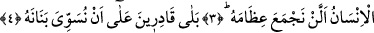
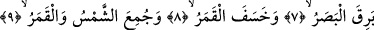
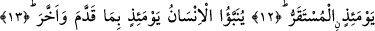
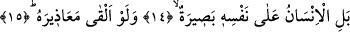

O GÜN İNSAN
KENDİ KENDİNİN ŞÂHİDİDİR
Bismillâhirrahmânirrahîm
1. Kıyâmet gününe yemin ederim.
2. Kendini kınayan (pişmanlık duyan) nefse yemin ederim (diriltilip hesaba
çekileceksiniz).
3. İnsan, kendisinin kemiklerini biraraya toplayamayacağımızı mı sanır?
4. Evet, bizim, onun parmak uçlarını bile aynen eski hâline getirmeye gücümüz
yeter.
5. Fakat insan önündekini (kıyâmeti) yalanlamak ister.
6. «Kıyâmet günü ne zamanmış?» diye sorar.
7. İşte, göz kamaştığı,
8. Ay tutulduğu,
9. Güneşle ay biraraya getirildiği zaman!
10. O gün insan, «Kaçacak yer neresi!» diyecektir.
11. Hayır, hayır! (Kaçıp) sığınacak yer yoktur!
12. O gün varıp durulacak yer, sâdece Rabbinin huzûrudur.
13. O gün insana, ileri götürdüğü ve geri bıraktığı ne varsa bildirilir.
14. Artık insan, kendi kendinin şâhididir.
15. İsterse özürlerini sayıp döksün.
1) “Kıyâmet gününe yemin ederim” Âyetin başındaki “lâ” harfi kasemi güçlendirmek